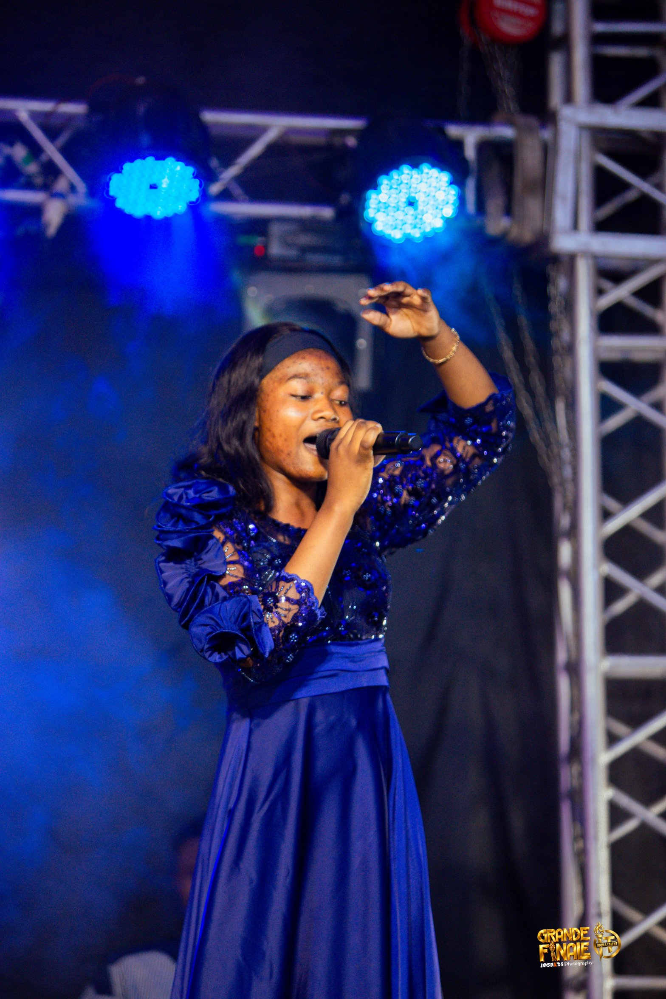
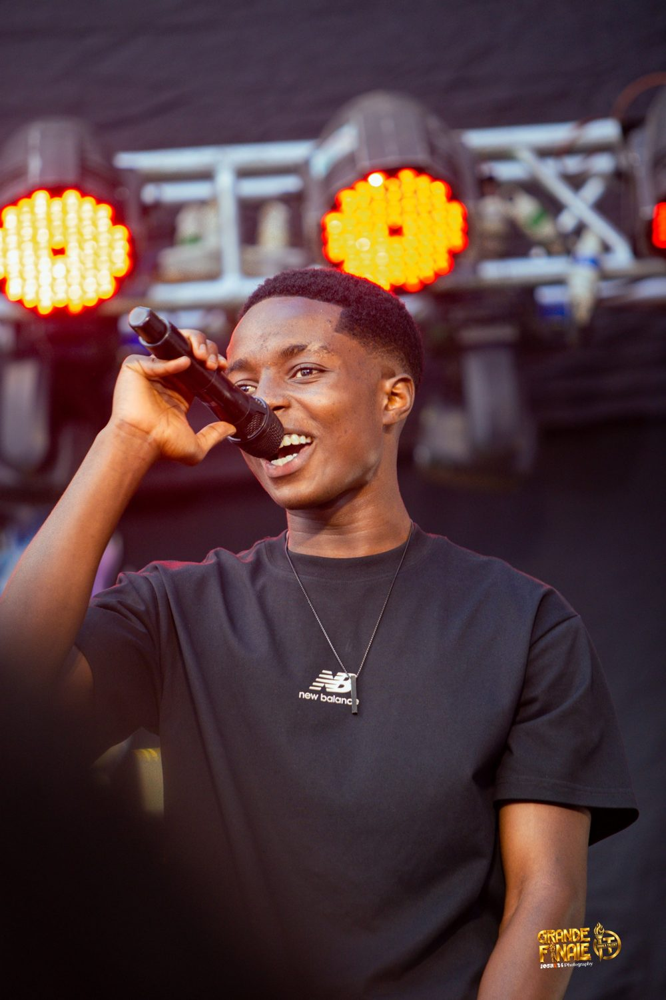
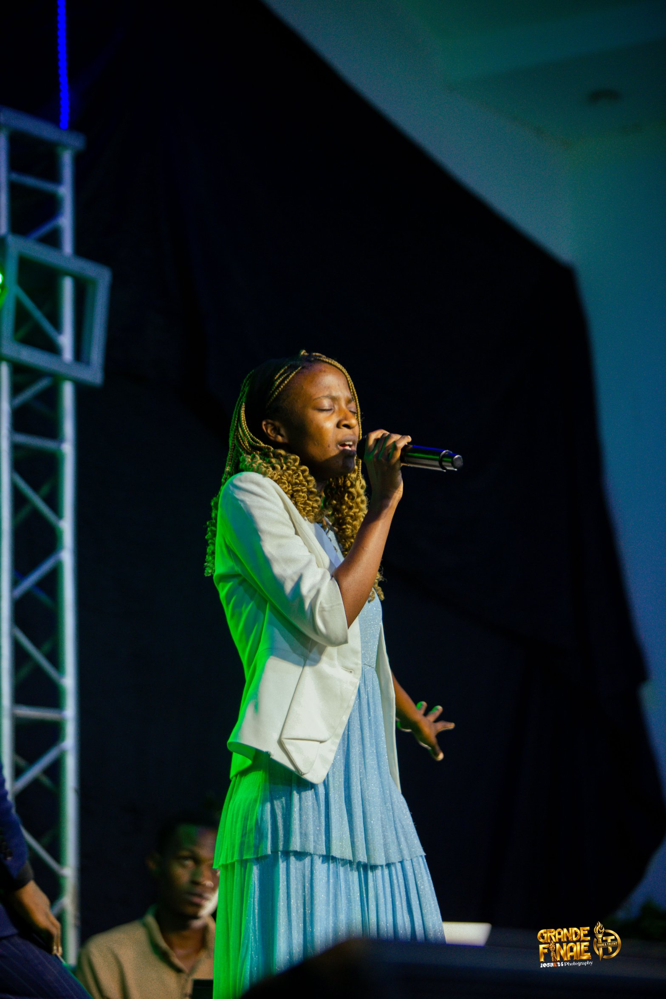
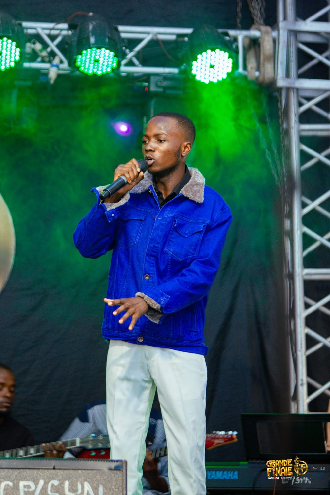

Cultivons nos talents, car le talent est une richesse à cultiver.
Inuka Talent repère, accompagne et fait connaître les nouveaux talents du gospel et de tous les arts : chant, musique, danse, théâtre, poésie et bien plus. Chaque talent a sa place.
Montez sur la scène d'Inuka Talent
Date limite d'inscription : 21 février 2027. Envoyez par WhatsApp une vidéo où vous chantez et réglez 5 USD de frais d'inscription.
Inuka veut dire « lève-toi »
Inuka Talent est une plateforme gospel qui met la foi en Jésus-Christ au centre de son action. Elle a été créée pour découvrir de nouvelles voix et leur donner les moyens de servir par la musique.
Notre mission est de transformer les rêves des jeunes talents gospel en réalité : en révélant leur potentiel, en les entourant de partenaires et en défendant leurs droits d'artistes.
Détecter
Auditions et concours ouverts à tous les artistes (chanteurs, musiciens, danseurs, comédiens, poètes, créateurs) qui veulent être vus et entendus.
Accompagner
Coaching vocal, conseils de scène et suivi artistique pour chaque talent sélectionné.
Faire connaître
Production, concerts et diffusion pour que la musique de nos artistes touche un large public.
Comment participer à Inuka Talent
Quatre étapes, de l'inscription à la finale de la 2e édition.
Les voix d'Inuka




Ce que nous avons déjà réalisé
La première édition d'Inuka Talent s'est tenue à Goma, au Nord-Kivu. Des quarts de finale jusqu'à la grande finale, elle a révélé de nouvelles voix et rassemblé un public autour de leurs prestations. La seconde édition est en préparation.
- 100inscrits
- 751er gala
- 50Battle
- 35Tradi
- 20Compo
- 15finale
- 3lauréats
Associez votre marque à Inuka Talent 2
La deuxième édition se tiendra à Goma en 2027. Entreprises, institutions et particuliers peuvent nous accompagner.
- Une visibilité auprès des jeunesVotre marque présente sur nos supports, nos réseaux sociaux et lors de la finale.
- Un soutien qui vous ressembleApport financier, matériel ou technique : nous adaptons la formule à vos objectifs.
- Un engagement pour la jeunesseSoutenez la détection et l'accompagnement des talents de Goma.
- Un soutien régulierUn petit montant chaque mois, tout au long du concours, compte aussi.
Le dossier complet est envoyé sur demande, avec une présentation adaptée à votre entreprise.
Une inscription, un booking, un partenariat ?
Écrivez-nous : nous répondons rapidement, sur WhatsApp comme par email.